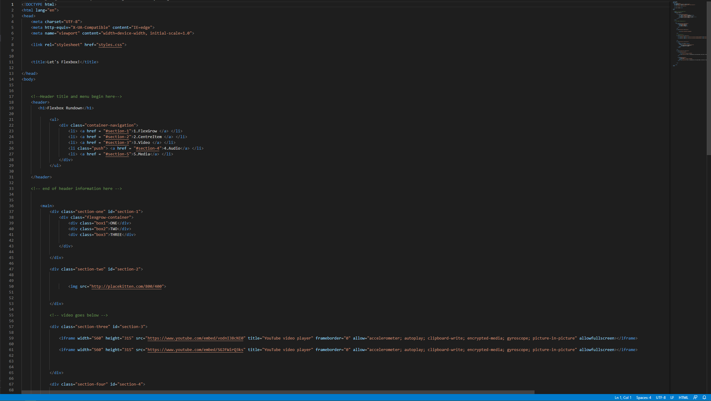
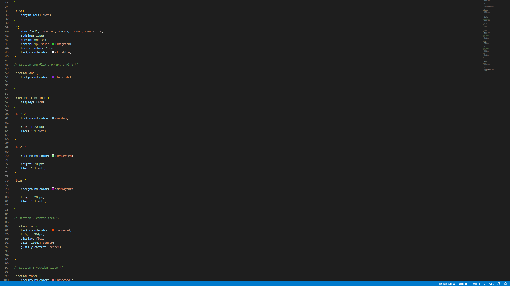
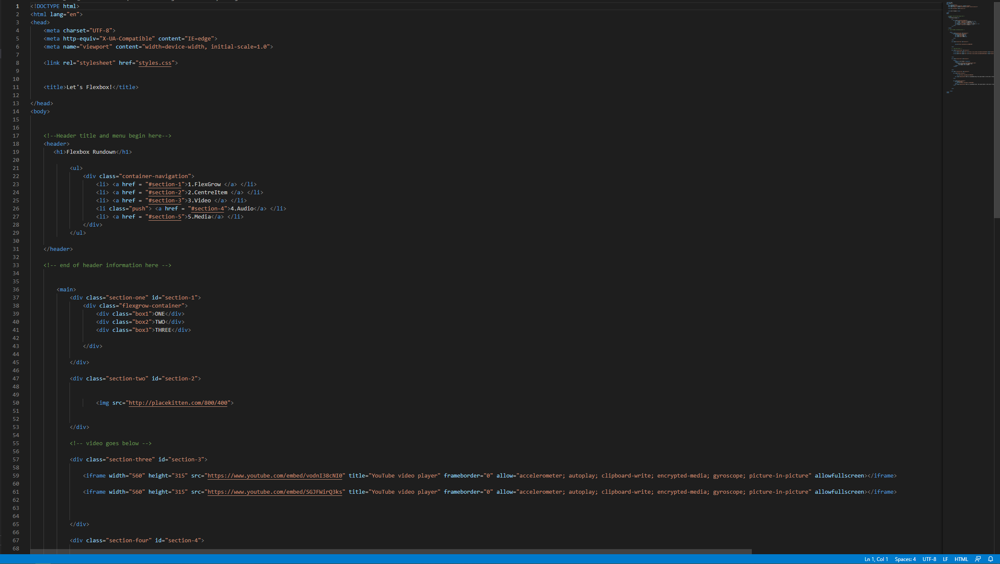
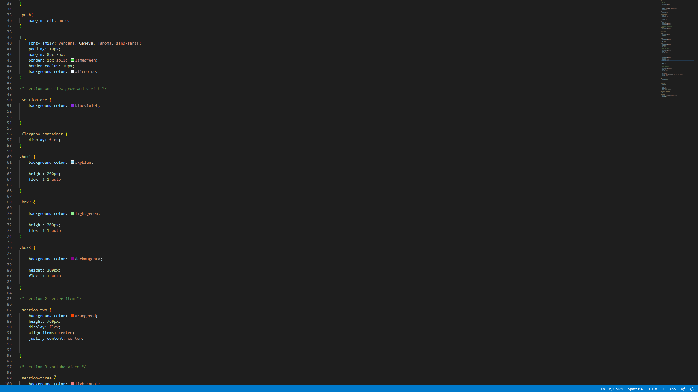

Coding task
The first worksheet covers the basics of GitHub and how to publish repositories. This is a good way of backing up code and allowing you to easily access old versions of it. Then some basics of HTML are introduced with the body tag that holds the main part of a website. Using GitHub was confusing at first as you have to rerember to commit and push files as well as save them. However it is a useful tool to help store and back up prodjects. Worksheet 1
The second worksheet shows the head tag which holds metadata about the file. The title tag also is used to add text into the tab section of your browser. h is also used, it usually has a number behind it to denote the text size. It is used for headings, the larger the number the larger the text. P is used to add paragraphs so that you can add more text. Lists or li can also be used. They can be ordered using ol, this will put text with numbers in numerical order or other text in alphabetical order. You can also change the weight of the text by using strong or small to emphasise certain text. Hyperlinks are also introduced to help add images. This reintroduced me to some of the html I had learnt previousely which helped me to rerember the syntax and reminded me to use GitHub and backup my code regularly. Worksheet 2
This worksheet introduces CSS which is used to style text and the layout of the html page. This can do things like define fonts, and borders and padding to add space to elements. Flexbox is also introduced. Elements need to be in a container. This is then used to allow the webpage to be responsive while changing size. This can also help to align elements. I had already used some CSS but not in depth so this helped me to improve my knowledge and make my designs better. This also introduced flexbox which was challenging at first but over time it became easier to use to develop websites and make them responsive. Worksheet 3
 



Worksheet 4 introduces menu items to be able to easily traverse the website. These are then styled. Flex grow is used to define how much an item will grow relative to the rest of the flexible items inside the same container, flex shrink can also be used. Videos, audio and anchor links are also introduced to add different media and link to different parts of the page. The new flexbox styles where useful to develop the website. The anchor links where also useful to navigate through a website but the specific styling in the worksheet using push was confusing to use. Worksheet 4
Worksheet 5 looks at buttons and how to style them. This was used to help navigate through the website using a menu. A footer is also added to display information at the base of every page. The ability to import google and adobe fonts where also shown. This helped to personalise the website and make it look more distinct and interesting. Worksheet 5